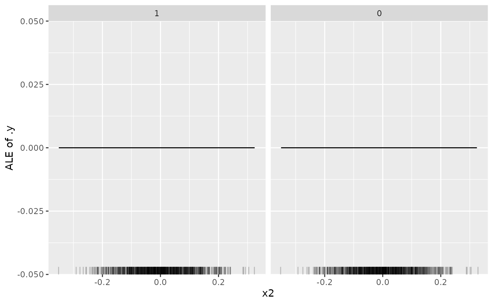
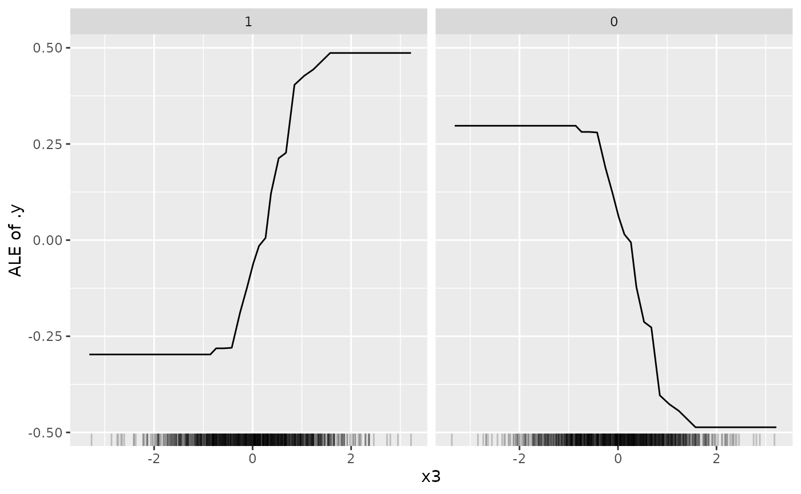

eagga
Get started
eagga.RmdIntro
The EAGGA algorithm is a model-agnostic framework
designed to jointly optimize the predictive performance and
interpretability of supervised machine learning models for tabular data.
This algorithm incorporates three key measures of interpretability:
feature sparsity, interaction sparsity of features, and sparsity of
non-monotone feature effects.
By formulating the hyperparameter optimization process of a machine
learning algorithm as a multi-objective optimization problem,
EAGGA enables the generation of diverse models that strike
a balance between high performance and interpretability within a single
optimization run. Efficient optimization is achieved by expanding the
search space of the learning algorithm through the inclusion of feature
selection, interaction, and monotonicity constraints in the
hyperparameter search which are represented in the form of a
groupstructure.
The core concept behind EAGGA lies in identifying the
Pareto optimal set of groups of selected features that can interact
within a model, along with determining their optimal monotonicity
constraints and the optimal hyperparameters of the learning algorithm
itself.
This vignette is a gentle introduction to the core functionality of
the eagga package. For more details on the algorithm
itself, please see Schneider, Bischl, and Thomas
(2023). Note that the eagga package heavily builds
upon the mlr3 ecosystem. If you are not familiar with it,
we highly recommend to make yourself familiar with it, by for example
reading the following book: https://mlr3book.mlr-org.com/
As a final comment: In the following, we will write
EAGGA to refer to the algorithm, whereas eagga
will refer to the software implementation, i.e., the R package this
vignette is introducing.
Technical Preliminaries
Supported Learners
Although formulated model-agnostic, the current EAGGA
implementation currently only supports XGBoost learners (LearnerClassifXgboost
or mlr3learners::LearnerRegrXgboost).
Note that the XGBoost "booster" must be set to
"gbtree".
Supported Tasks
eagga currently can be used for binary classification
and regression tasks. This might change in the near future to also
include multi-class classification tasks but depends on the concrete
{feature,interaction,monotonicity}.detectors used within
eagga and whether they support multi-class classification.
Moreover, feature types currently must be integer or numeric (also due
to the usage of detectors but anyways required by XGBoost). Although
categorical features can in principle be one-hot or impact encoded,
e.g., via mlr3pipelines
by using a suitable PipeOp
and wrapping the pipeop + learner in a GraphLearner,
the current EAGGA implementation does not support such an
encoding. This behavior might change in the near future. If your use
case includes categorical features or multi-class classification tasks,
please open an issue so that we are aware of it and can work on
implementing proper support with higher priority.
Building Blocks of EAGGA
As outlined in the paper, the basic building blocks of
EAGGA are a learner with a hyperparameter search space, a
tabular machine learning task, a resampling method and a performance
metric.
Learner and Search Space
The learner must support the specification of feature selection as
well as interaction and monotonicity constraints of features. Currently
only XGBoost learners (LearnerClassifXgboost
or mlr3learners::LearnerRegrXgboost)
are supported.
Feature selection is handled via mlr3pipelines making use of
mlr3pipelines::PipeOpSelect.
EAGGA further makes use of so-called
{feature,interaction,monotonicity}.detectors. For example, the MonotonicityDetector
is used to detect the sign of a feature if it should be constrained to
have a monotone effect on the target. To apply such a sign correction,
the learner must be configured accordingly, this is handled via mlr3pipelines::PipeOpColApply
which will be configured accordingly during optimization. Finally, to
make sure nothing weird happens during optimization, features are always
sorted alphabetically in the internal data representation via eagga::PipeOpSortFeatures.
A suitable learner therefore combines all these pipeops and the
learner itself in the form of a mlr3pipelines::GraphLearner
and will look like the following (assuming classification):
library(mlr3)
library(eagga)
#> Loading required package: mlr3tuning
#> Loading required package: paradox
library(mlr3learners)
library(mlr3pipelines)
library(mlr3misc)
library(data.table)
set.seed(2906)
learner = as_learner(po("colapply") %>>% po("select") %>>% po("sortfeatures") %>>% lrn("classif.xgboost"))
learner$param_set$values$classif.xgboost.booster = "gbtree"
learner$param_set$values$colapply.applicator = function(x) - xNote that we have to set the "classif.xgboost.booster"
hyperparameter to "gbtree". Moreover, the function to apply
via PipeOpColApply
must be set to function(x) - x (which is responsible for
changing the sign of features after having detected the necessity of
such a swap via using a monotonicity detector as described above).
Users can customize this pipeline building the graph learner but must
adhere to the basic structure
(colapply --> select --> sortfeatures --> [custom user block] --> learner).
The search space defines the hyperparameter search space that should be optimized over. An example looks like the following:
search_space = ps(
classif.xgboost.nrounds = p_dbl(lower = log(1), upper = log(500), tags = c("int", "log"),
trafo = function(x) as.integer(round(exp(x))), default = log(50)),
classif.xgboost.eta = p_dbl(lower = log(1e-4), upper = log(1), tags = "log",
trafo = function(x) exp(x), default = log(0.3)),
classif.xgboost.gamma = p_dbl(lower = log(1e-4), upper = log(7), tags = "log",
trafo = function(x) exp(x), default = log(1e-4)),
classif.xgboost.lambda = p_dbl(lower = log(1e-4), upper = log(1000), tags = "log",
trafo = function(x) exp(x), default = log(1)),
classif.xgboost.alpha = p_dbl(lower = log(1e-4), upper = log(1000), tags = "log",
trafo = function(x) exp(x), default = log(1e-4)),
classif.xgboost.subsample = p_dbl(lower = 0.1, upper = 1, default = 1),
classif.xgboost.max_depth = p_int(lower = 1, upper = 20, default = 6),
classif.xgboost.min_child_weight = p_dbl(lower = log(1), upper = log(150), tags = "log",
trafo = function(x) exp(x), default = log(exp(1))),
classif.xgboost.colsample_bytree = p_dbl(lower = 0.01, upper = 1, default = 1),
classif.xgboost.colsample_bylevel = p_dbl(lower = 0.01, upper = 1, default = 1),
select.selector = p_uty(), # must be part of the search space
classif.xgboost.interaction_constraints = p_uty(), # must be part of the search space
classif.xgboost.monotone_constraints = p_uty() # must be part of the search space
)This search space specifies that we tuner over nrounds,
eta, gamma, lambda,
alpha, subsample, max_depth,
min_child_weight, colsample_bytree and
colsample_by_level which are standard hyperparameters of
XGBoost (for an explanation and description, see e.g.,
?xgboost or https://xgboost.readthedocs.io/en/stable/parameter.html).
Note that in general it is better to set the upper bound of
nrounds higher (e.g., around log(5000) and the
default to log(500) but we use less boosting rounds to
speed up the following examples.
Additionally, we must specify that we also tune over the feature
selector and interaction_constraints and
monotone_constraints (we specify these as ParamUty
hyperparameters because they are not directly tunable in a standard way.
However, we need to include them into the search space as
eagga must be able to pass such constraints based on
so-called group structures to the learner.
Task
The task is usually supplied by the user. Here we will use the following toy task for illustrative purposes:
generate_task = function(n) {
x1 = runif(n, min = 0, max = 3)
x2 = rnorm(n, sd = 0.1)
x3 = rnorm(n)
x4 = runif(n, min = -1, max = 1)
x5 = rnorm(n)
y = cos(x1) + 0.1 * x2 + 1.5 * x3 + 0.1 * x4 + x3 * x4
y = y - mean(y) + rnorm(n, sd = 0.1)
label = rep("0", n)
label[y > 0.5] = "1"
label = as.factor(label)
dat = data.table(x1 = x1, x2 = x2, x3 = x3, x4 = x4, x5 = x5, label = label)
task = TaskClassif$new("example", backend = dat, target = "label", positive = "1")
task
}
task = generate_task(1000)In this task, the label is strongly influenced by the features
"x1" and "x3", whereas "x2" and
"x4" have smaller influence and "x5" is not
used at all. "x1" does have a monotone decreasing effect on
the probability of predicting a label of "1", whereas
"x2", "x3" and "x4" all have
varying linear (monotone increasing) effects on the probability of
predicting a label of "1". Moreover, features
"x3" and "x4" show a simple interaction.
Resampling
You can use any resampling supported my mlr3. Here we will use three-fold cross-validation:
resampling = rsmp("cv", folds = 3)Performance Measure (and Interpretability Measures)
You can use any performance measure supported by mlr3. Here we will use the classification error:
performance_measure = msr("classif.ce")As EAGGA jointly optimizes for performance and
interpretability, we also need to pass the interpretability measures
(NF, NI and NNM in the paper):
the relative number of features used by the model, the relative number
of (pariwise) interactions of features in the model and the relative
number of non-monotone feature effects.
These measures are implemented via so-called proxy measures (proxy
because they actually do not work like standard mlr3 measures and do not
operate on a Prediction
object but rather are always hard coded to a value of zero but updated
and computed within the actual optimization process).
For details, see MeasureSelectedFeaturesProxy,
MeasureSelectedInteractionsProxy
and MeasureSelectedNonMonotoneProxy.
Again, note that these measures do not do anything meaningful except
for when being used in combination with eagga.
Tuning with TunerEAGGA
As we have introduced all building blocks, we can now use
EAGGA to jointly optimize for performance and
interpretability. This works by constructing a TuningInstanceMultiCrit
and a TunerEAGGA.
instance = TuningInstanceMultiCrit$new(
task = task,
learner = learner,
resampling = resampling,
measures = measures,
terminator = trm("evals", n_evals = 30),
search_space = search_space
)By setting terminator = trm("evals", n_evals = 30) we
specify that termination of the tuning process should occur after having
evaluated 30 configurations. This is sufficient for illustrative
purposes here but should be set much higher in practice. Termination can
also be specified via other terminators, see, e.g.,
?mlr_terminators
We now construct the tuner. For everything to smoothly work together,
we have to explicitly tell the tuner the pipeop id of the
learner within the graph learner via learner_id. Moreover,
we have to specify the parameter id of the interaction
constraint and monotonicity constraint hyperparameters via
interaction_id and monotone_id. We can further
specify the population size via mu and the offspring size
via lambda. Here we set them to mu = 10 and
lambda = 2 for illustrative purposes (usually they should
be set much higher; a good starting point can be mu = 100
and lambda = 10). Furthermore we can specify
seed_calculate_proxy_measures to seed the model fitting
process of configurations tried during optimization on the task to be
able to fully reproduce models resulting in certain NF,
NI, and NNM values found during optimization.
For more details, see the section on reconstructing models below.
tuner = tnr("eagga",
learner_id = "classif.xgboost",
select_id = "select.selector",
interaction_id = "classif.xgboost.interaction_constraints",
monotone_id = "classif.xgboost.monotone_constraints",
mu = 10,
lambda = 2,
seed_calculate_proxy_measures = 1
)We can now start the optimization process:
tuner$optimize(instance)
#> classif.xgboost.nrounds classif.xgboost.eta classif.xgboost.gamma
#> 1: 4.579827 -0.1562697 -7.809646
#> 2: 3.221994 -1.4195552 -7.715113
#> 3: 3.559853 -0.1725791 -9.210340
#> 4: 3.559853 -0.1725791 -9.210340
#> 5: 3.912023 -1.2039728 -9.210340
#> 6: 4.579827 -0.1562697 -7.809646
#> 7: 4.579827 -0.1562697 -7.809646
#> 8: 3.303761 -1.3299372 -8.878691
#> 9: 3.559853 -0.1562697 -7.809646
#> 10: 4.579827 -0.1725791 -9.210340
#> 11: 3.559853 -0.1725791 -9.210340
#> 12: 3.559853 -0.1725791 -9.210340
#> 13: 3.303761 -1.3299372 -8.878691
#> 14: 3.221994 -1.4195552 -7.715113
#> 15: 3.221994 -1.4195552 -7.715113
#> 16: 3.912023 -1.2039728 -9.210340
#> 17: 3.912023 -1.2039728 -9.210340
#> classif.xgboost.lambda classif.xgboost.alpha classif.xgboost.subsample
#> 1: -3.167346 -9.210340 1.0000000
#> 2: 3.822008 -9.210340 0.9988563
#> 3: 2.075947 -8.710336 0.9207827
#> 4: 2.075947 -8.710336 0.9207827
#> 5: 0.000000 -9.210340 1.0000000
#> 6: -3.167346 -9.210340 0.9988563
#> 7: -3.167346 -9.210340 1.0000000
#> 8: -1.355523 -7.639524 1.0000000
#> 9: 2.151026 -9.210340 0.9207827
#> 10: -3.167346 -8.710336 0.9988563
#> 11: 2.075947 -8.710336 0.9207827
#> 12: 2.075947 -8.710336 0.9207827
#> 13: -1.355523 -7.639524 1.0000000
#> 14: 3.822008 -9.210340 0.9988563
#> 15: 5.428247 -9.210340 1.0000000
#> 16: 0.000000 -9.210340 1.0000000
#> 17: 0.000000 -9.210340 1.0000000
#> classif.xgboost.max_depth classif.xgboost.min_child_weight
#> 1: 4 1.5855743
#> 2: 8 0.4933049
#> 3: 5 0.9270958
#> 4: 5 0.9270958
#> 5: 6 1.0000000
#> 6: 8 1.5855743
#> 7: 4 1.5855743
#> 8: 6 0.8530992
#> 9: 9 0.9270958
#> 10: 5 1.5855743
#> 11: 5 0.9270958
#> 12: 5 0.9270958
#> 13: 6 0.8530992
#> 14: 8 0.4933049
#> 15: 4 0.4933049
#> 16: 6 1.0000000
#> 17: 6 1.0000000
#> classif.xgboost.colsample_bytree classif.xgboost.colsample_bylevel
#> 1: 1.0000000 1.0000000
#> 2: 0.9711652 0.9816349
#> 3: 0.8474910 0.8997374
#> 4: 0.8474910 0.8997374
#> 5: 1.0000000 1.0000000
#> 6: 1.0000000 0.9816349
#> 7: 1.0000000 0.9816349
#> 8: 1.0000000 0.9875292
#> 9: 1.0000000 0.8997374
#> 10: 0.8474910 0.9816349
#> 11: 0.8474910 0.8997374
#> 12: 0.8474910 0.8997374
#> 13: 1.0000000 0.9875292
#> 14: 0.9711652 0.9816349
#> 15: 0.9711652 1.0000000
#> 16: 1.0000000 1.0000000
#> 17: 1.0000000 1.0000000
#> select.selector classif.xgboost.interaction_constraints
#> 1: <Selector[1]> <list[1]>
#> 2: <Selector[1]> <list[1]>
#> 3: <Selector[1]> <list[1]>
#> 4: <Selector[1]> <list[1]>
#> 5: <Selector[1]> <list[1]>
#> 6: <Selector[1]> <list[1]>
#> 7: <Selector[1]> <list[1]>
#> 8: <Selector[1]> <list[1]>
#> 9: <Selector[1]> <list[1]>
#> 10: <Selector[1]> <list[1]>
#> 11: <Selector[1]> <list[1]>
#> 12: <Selector[1]> <list[1]>
#> 13: <Selector[1]> <list[2]>
#> 14: <Selector[1]> <list[2]>
#> 15: <Selector[1]> <list[1]>
#> 16: <Selector[1]> <list[1]>
#> 17: <Selector[1]> <list[1]>
#> classif.xgboost.monotone_constraints learner_param_vals x_domain
#> 1: 1,1 <list[19]> <list[13]>
#> 2: 1 <list[19]> <list[13]>
#> 3: 1 <list[19]> <list[13]>
#> 4: 1 <list[19]> <list[13]>
#> 5: 1 <list[19]> <list[13]>
#> 6: 1 <list[19]> <list[13]>
#> 7: 1 <list[19]> <list[13]>
#> 8: 1,1,1 <list[19]> <list[13]>
#> 9: 1 <list[19]> <list[13]>
#> 10: 1 <list[19]> <list[13]>
#> 11: 1 <list[19]> <list[13]>
#> 12: 1 <list[19]> <list[13]>
#> 13: 1,1,0 <list[19]> <list[13]>
#> 14: 1,1 <list[19]> <list[13]>
#> 15: 1 <list[19]> <list[13]>
#> 16: 1 <list[19]> <list[13]>
#> 17: 1 <list[19]> <list[13]>
#> classif.ce selected_features_proxy selected_interactions_proxy
#> 1: 0.06500213 0.4 0.1
#> 2: 0.16600732 0.2 0.0
#> 3: 0.16600732 0.2 0.0
#> 4: 0.16600732 0.2 0.0
#> 5: 0.16600732 0.2 0.0
#> 6: 0.16600732 0.2 0.0
#> 7: 0.16600732 0.2 0.0
#> 8: 0.02801005 0.6 0.3
#> 9: 0.16600732 0.2 0.0
#> 10: 0.16600732 0.2 0.0
#> 11: 0.16600732 0.2 0.0
#> 12: 0.16600732 0.2 0.0
#> 13: 0.06400712 0.6 0.1
#> 14: 0.07600115 0.4 0.0
#> 15: 0.16600732 0.2 0.0
#> 16: 0.16600732 0.2 0.0
#> 17: 0.16600732 0.2 0.0
#> selected_non_monotone_proxy
#> 1: 0.0
#> 2: 0.0
#> 3: 0.0
#> 4: 0.0
#> 5: 0.0
#> 6: 0.0
#> 7: 0.0
#> 8: 0.0
#> 9: 0.0
#> 10: 0.0
#> 11: 0.0
#> 12: 0.0
#> 13: 0.2
#> 14: 0.0
#> 15: 0.0
#> 16: 0.0
#> 17: 0.0We can then inspect the Pareto front:
measure_ids = c("classif.ce",
"selected_features_proxy",
"selected_interactions_proxy",
"selected_non_monotone_proxy")
front = unique(instance$archive$best()[, measure_ids, with = FALSE])
setorderv(front, cols = "classif.ce")
front
#> classif.ce selected_features_proxy selected_interactions_proxy
#> 1: 0.02801005 0.6 0.3
#> 2: 0.06400712 0.6 0.1
#> 3: 0.06500213 0.4 0.1
#> 4: 0.07600115 0.4 0.0
#> 5: 0.16600732 0.2 0.0
#> selected_non_monotone_proxy
#> 1: 0.0
#> 2: 0.2
#> 3: 0.0
#> 4: 0.0
#> 5: 0.0We observe that we found diverse models trading off performance and
interpretability to varying degree. We can further inspect the group
structure of each model (for more details on the GroupStructure
class, see the technical details section below):
instance$archive$best()[8, ]$groupstructure[[1]]$get_groups()
#> [[1]]
#> [1] "x2" "x5"
#>
#> [[2]]
#> [1] "x1" "x3" "x4"We see that in this model, features "x2" and
"x5" are not used (as they are in the first, “unselected”
group of features), whereas "x1", "x3" and
"x4" are allowed to interact (as they are in the second
group, grouped together).
Moreover,
instance$archive$best()[8, ]$groupstructure[[1]]$monotone_features
#> feature monotonicity
#> 1: x1 1
#> 2: x2 NA
#> 3: x3 1
#> 4: x4 1
#> 5: x5 NAtells us that "x1", "x3" and
"x4" are constrained to have a monotone (increasing) effect
on the feature. But wait, didn’t we say that in our toy task,
"x1" has a monotone decreasing effect on the target? Yes,
but: As our MonotonicityDetector
within EAGGA detected "x1" to have a monotone
decreasing effect (if enforced) and we were able to swap the sign of the
feature itself to then enforce a monotone increasing effect (and in
EAGGA we only want to differentiate between unconstrained
or monotone increasing feature effects):
mlr3misc::get_private(tuner)$.monotonicity_detector$get_sign("x1")
#> [1] -1
instance$objective$learner$param_set$values$colapply.affect_columns
#> selector_name("x1")Note: As this process of swapping the sign of features is performed
during optimization, you cannot simply use the learner you passed to the
instance afterwards to train your learner with a given hyperparameter
configuration and group structure. Instead, you should use the learner
within the objective of the instance which was updated in place:
instance$objective$learner. To use a hyperparameter
configuration and group structure together with this learner, you can
then do the following. Assume we want to use the eighth configuration of
the Pareto set, then we can simply specify the hyperparameter values as
follows:
hpc = instance$archive$best()[8, "x_domain"][[1]][[1]]
learner = instance$objective$learner
learner$param_set$values = insert_named(learner$param_set$values, hpc)However, as EAGGA uses a feedback loop during
optimization to update the feature selection, feature interaction and
monotonicity constraints based on the actual structures found in the
model (tightening the upper bound of the group structure passed to the
learner to fit the model and updating this original group structure post
hoc), some more additional steps are needed to fully reconstruct a model
found during optimization.
In essence, this involves re-creating the feature selection, feature interaction and monotonicity constraints from the original group structure that was used to fit the model (prior to that group structure being updated by the feedback loop):
groupstructure_orig = instance$archive$best()[8, "groupstructure_orig"][[1]][[1]]
hpc$select.selector = groupstructure_orig$create_selector()
hpc$classif.xgboost.interaction_constraints = groupstructure_orig$create_interaction_constraints()
hpc$classif.xgboost.monotone_constraints = groupstructure_orig$create_monotonicity_constraints()
learner$param_set$values = insert_named(learner$param_set$values, hpc)To make this easier, the following section describes a more automated way.
Deciding on a Model and Reconstructing it
Once we have decided on a model (based on a non-dominated
hyperparameter configuration and group structure) we prefer, we can
“reconstruct” it. To do so, we use the reconstruct_eagga_model
function and pass the tuning instance, the tuner and the uhash of the
model we want to “reconstruct” as logged in the archive:
uhash = instance$archive$best()$uhash[8]
model = reconstruct_eagga_model(instance, tuner = tuner, model_uhash = uhash)We can then use this model as any other trained learner, for example, if we want to predict on new data:
task_test = generate_task(10000)
model$predict(task_test)$score(msr("classif.ce"))
#> classif.ce
#> 0.0341In general, note that the performance estimates obtained during optimization via a resampling method can be biased estimates of the performance of the final model, as we have based our decision making process on these performance estimate (this is in essence the same problem as in single objective hyperparameter optimization and why we should use nested resampling to get an unbiased estimate of the performance of the final model). Ideally, you do have access to some unseen test data as illustrated above.
Inspecting Models with the iml Package
As mlr3 nicely interplays with the iml package, we can easily use post-hoc interpretable ML techniques to gain some more insights into a model of our choice. For example, we can look at ALE plots of each feature:
model$predict_type = "prob"
library(iml)
predictor = Predictor$new(model,
data = task$data(cols = task$feature_names),
y = task$data(cols = task$target_names)[[1]])
effect_x2 = FeatureEffect$new(predictor, feature = "x2")
plot(effect_x2)
As expected the ALE plot shows us that feature "x2 has
no effect on the target as it cannot be used by the model:
model$param_set$values$select.selector
#> selector_name(c("x1", "x3", "x4"))Similarly, we can look at other featues:
effect_x3 = FeatureEffect$new(predictor, feature = "x3")
plot(effect_x3)
We know that feature "x3" can be used by the model and
is constrained to have a monotone increasing effect on the target -
which is also confirmed by the ALE plot. However, recall that our
monotonicity detector during optimization detected that
"x3" actually should have a monotone decreasing effect on
the target and to achieve a monotone increasing effect we switched the
sign of the feature. This is “hidden” in the ALE plot, i..e, it looks as
if "x3" indeed has a monotone increasing feature effect on
predicting the positive class label "1" - but the actual
monotonicity direction is a decreasing one as we have swapped the sign
of the feature (so be careful when interpreting the monotonicity of
feature effects, if signs have been swapped during optimization).
model$param_set$values$colapply.affect_columns
#> selector_name("x1")
model$param_set$values$colapply.applicator
#> function(x) - x
#> <bytecode: 0x5615d30faea0>Technical Details
This section is work in progress and will explain technical details
of the TunerEAGGA,
Probs,
InteractionDetector,
MonotonicityDetector
and GroupStructure
classes. Note that the feature detector is currently implemented within
TunerEAGGA
directly and not exposed as a standalone class but this might change in
the near future. The current feature detector is simply based on a FilterInformationGain.